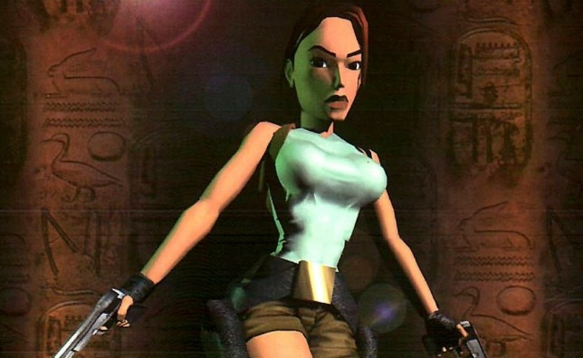
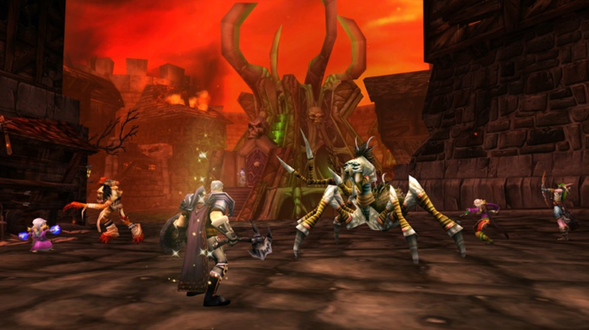

5 curiosidades engraçadas sobre o Mundo dos Games
- Tetris foi o primeiro jogo a ir para o espaço Em 1993, um jogo saiu da órbita terrestre pela primeira vez. Esse jogo foi o Tetris do Nintendo Game Boy, que estava bastante popular na época e foi levado pelo cosmonauta russo Aleksandr A. Serebrov a bordo de uma Soyuz TM-17 para a Estação Espacial MIR. A viagem durou 196 dias e 17 horas e o game orbitou a Terra mais de três mil vezes. Em 2011, o cartucho viajante foi vendido em um leilão por US$ 1.220.
- Lara Croft quase se chamou Laura Cruz Lara Croft, a arqueóloga mais famosa dos videogames, quase teve um nome bem diferente. Quando os primeiros conceitos de Tomb Raider foram elaborados, o plano do animador da Core Design responsável pelo título era desenvolver uma história interativa em que um personagem masculino, nos moldes de Indiana Jones, iria até as pirâmides do Egito para procurar tesouros. No entanto, para se diferenciar do personagem dos cinemas, a equipe decidiu transformar o personagem masculino em uma mulher sul-americana chamada Laura Cruz. Posteriormente, o nome latino foi considerado muito difícil de pronunciar entre os falantes do idioma inglês. Então, Laura virou Lara e, após consultar um catálogo telefônico, eles encontraram o sobrenome Croft, que substituiu o Cruz. 
- Barack Obama fez campanha em vários jogos Durante a eleição presidencial de 2008, o então candidato Barack Obama decidiu usar os jogos como veículo de sua campanha. Ele comprou espaços de propaganda em 18 títulos para exibir o seu slogan “Vote for Change”. Os anúncios foram exibidos em 10 estados americanos em jogos mais focados no público adulto como Burnout Paradise, Skate, Madden e NASCAR.
- World of Warcraft passou por uma pandemia virtual No dia 13 de setembro de 2005, o Patch 1.7.0 de World of Warcraft foi lançado trazendo uma nova área de raid chamada Zul'Gurub. Nela, os jogadores enfrentavam o boss Hakkar the Soulflayer que tinha como habilidade um debuff chamado Corrupted Blood. Ele drenava a vida dos personagens e se espalhava para todos que estavam perto. A intenção era que o efeito acabasse ao fim da raid, mas devido a um erro de programação, o debuff saiu da raid e logo começou a se espalhar. O jogadores de level mais baixo começaram a morrer e os de nível alto precisavam se curar constantemente. A “doença” também afetou NPCs, aumentando ainda mais a velocidade de contágio. Hubs de quest e áreas comuns ficaram desertos e os jogadores começaram a ter que fazer quarentena, evitando lugares de alta circulação. A Blizzard precisou fazer um hard reset e aplicar um patch ao jogo para eliminar a praga. O evento foi tão marcante que chamou a atenção de médicos e cientistas que o usaram o caso da Corrupted Blood como estudo no combate de doenças do mundo real. 
- Um computador feito com PlayStation 3 Em 2010, a Força Aérea Americana criou um poderoso supercomputador capaz de analisar rapidamente imagens de alta-resolução chamado Condor Cluster. No entanto, ele chamou bastante atenção do público gamer por ser composto de 1.760 consoles PlayStation 3 que trabalhavam em conjunto com unidades de processamento gráfico e servidores coordenadores. O projeto custou US$ 2 milhões e, segundo o Departamento de Pesquisa da Força Aérea, ele estava entre o 35º ou 36º computador mais rápido do mundo. Os pesquisadores optaram pelos consoles devido ao seu custo mais baixo. Caso o computador tivesse componentes convencionais, o projeto sairia 20 vezes mais caro.
O mundo dos games é cheio de mistérios interessantes e curiosidades engraçadas. Ao jogar um clássico como GoldenEye 007 do Nintendo 64, você não imagina que ele foi desenvolvido por um time inexperiente. Ou quando vê Devil May Cry, do PlayStation 2 (PS2), dificilmente pensa que ele se originou de um projeto que começou como um protótipo do que seria Resident Evil 4. Poucas pessoas sabem, mas já aconteceu até mesmo uma epidemia no World of Warcraft (WoW). Veja, na lista a seguir, 5 coisas engraçadas e segredos sobre videogames que você provavelmente não conhecia.

Então é isso! Espero que você tenha gostado do nosso artigo com essa curiosidade sobre o Mundo dos Games. E não esquece: gostou? Então compartilhe!